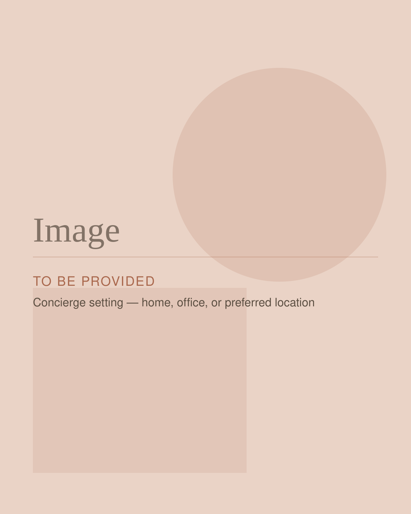

Aesthetics
Tox Treatments With Isabelle Joseph, DNP, NP-BC
Look Refreshed. Still Look Like You.
Fine lines are a natural part of expression—but sometimes they begin to linger even when your face is at rest.
Tox treatments can temporarily soften the appearance of expression lines by relaxing targeted facial muscles, creating a smoother, refreshed appearance without changing what makes you look like you.
Isabelle Joseph, DNP, NP-BC takes a personalized, thoughtful approach to Tox, considering your facial anatomy, natural movement, concerns, and goals before creating your treatment plan.
And with concierge care, treatment comes to you.
Overview
What Is Tox?
Tox is an injectable treatment using a type of medication known as a neuromodulator.
These medications work by temporarily reducing targeted muscle activity. When carefully placed in muscles responsible for repeated facial expressions, they can soften the appearance of dynamic lines and wrinkles.
Skin Clique offers FDA-approved neurotoxins including Xeomin, Dysport, and Botox. The appropriate product, placement, and amount of treatment will depend on your individual needs and treatment plan.
Isabelle will evaluate your facial movement, discuss what you'd like to accomplish, and help determine an approach designed specifically for you.
Who It May Be For
What Can Tox Address?
Forehead Lines
Repeatedly raising your eyebrows can eventually create horizontal lines across the forehead. Strategically placed Tox can help soften these lines while preserving natural-looking facial expression.
Frown Lines
The vertical lines that develop between the eyebrows are sometimes called “11s.” These lines can make you appear concerned, tired, or frustrated even when you don't feel that way. Tox can temporarily relax the muscles responsible for creating these expression lines.
Crow's Feet
Smiling and squinting can create fine lines extending from the outer corners of the eyes. Tox can soften the appearance of these lines while allowing your smile to still look like your smile.
Neck + Jawline
For appropriate patients, strategically placed Tox may be used to address visible neck bands and improve the appearance of the neck and jawline.
Lip Flip
Small amounts of Tox placed around the upper lip can relax targeted muscles, allowing more of the upper lip to show when smiling. A lip flip does not add volume in the way dermal filler does.
Masseter Treatment
Tox may also be used in the masseter muscles of the jaw. Depending on the patient's needs, treatment may help reduce muscle activity and can create a softer appearance through the lower face.
Isabelle's Approach to Tox
Your Face Isn't a Formula.
There isn't one perfect number of units or one injection pattern that works for everyone.
Your facial anatomy, muscle movement, previous treatments, preferences, and goals all matter.
Before treatment, Isabelle evaluates how your face moves and talks with you about what you're noticing and what you'd like to achieve.
Her approach is centered on thoughtful placement and personalized treatment—not simply treating lines because they're there.
The goal? To help you look refreshed while maintaining the expressions that make you look like you.
What to Expect
What to Expect
- Step 1
Consultation + Assessment
Your appointment begins with a conversation. Isabelle will review your goals, relevant medical history, previous treatments, and any concerns you have. She'll also evaluate your facial anatomy and muscle movement before recommending a personalized treatment plan.
- Step 2
Your Treatment
Once your treatment plan is established, small amounts of neurotoxin are precisely injected into the targeted areas. The injections themselves are quick, and many patients describe them as feeling like a small pinch.
- Step 3
Results Develop
Tox results aren't immediate. You may begin noticing changes within several days, with the treatment effect continuing to develop afterward. Results commonly last approximately three to four months, although individual experiences vary. Isabelle can help you determine an appropriate treatment schedule based on your response and goals.

Concierge Tox
Your Appointment. Your Space.
Aesthetic care doesn't have to mean spending part of your day traveling to and waiting inside a traditional clinic.
Isabelle provides concierge Tox treatments, bringing care directly to patients at home, at work, or another convenient location.
That means you can receive personalized aesthetic care in a comfortable environment with a provider you know and trust.
Isabelle is based in South Easton, Massachusetts and serves South Easton and select surrounding communities, including Norwell, Randolph, Somerset, Stoughton, and Westwood.
Is It Right for Me?
Is Tox Right for Me?
Tox may be worth exploring if you're bothered by expression lines or are looking for a subtle aesthetic refresh.
Potential candidates may include adults interested in addressing concerns such as:
- Forehead lines
- Frown lines between the eyebrows
- Crow's feet
- Certain neck or jawline concerns
- A lip flip
- Masseter treatment
- Preventative treatment of dynamic expression lines
Tox isn't appropriate for everyone.
Your medical history, medications, pregnancy or breastfeeding status, allergies, neuromuscular conditions, skin condition at the treatment site, and other individual factors may affect whether treatment is appropriate.
Your consultation with Isabelle is the place to discuss these considerations and determine whether Tox makes sense for you.
What to Know
Before Your Tox Appointment
Your medical provider will give you individualized instructions based on your health history and treatment plan.
Before your appointment, make sure Isabelle knows about your medications, supplements, medical conditions, allergies, previous neuromodulator treatments, and any prior complications with injectable treatments.
If you take prescribed medications, including medications that affect bleeding or clotting, do not stop them unless instructed to do so by the clinician who prescribed them.
You'll also receive any applicable Skin Clique pre-treatment instructions before your appointment.
Frequently Asked Questions
Tox Frequently Asked Questions
Have a question you don't see here? Bring it to your consultation, or browse the full FAQ page.
Will Tox make me look frozen?
The goal of Isabelle's approach is natural-looking treatment—not removing every bit of facial movement. Treatment is personalized according to your anatomy, movement, and goals. Talk with Isabelle about how much movement you'd like to maintain so she can incorporate your preferences into your treatment plan.
When will I see my results?
Tox doesn't work immediately. Many patients begin noticing an effect within several days, with results continuing to develop during the days following treatment.
How long does Tox last?
Results commonly last approximately three to four months, although this varies by patient, treatment area, product, dose, and individual response.
Does getting Tox hurt?
Most patients describe the injections as brief and similar to a small pinch. Let Isabelle know if you're particularly concerned about discomfort so you can discuss what to expect before treatment begins.
Is there downtime?
Most patients can return to many of their normal daily activities after treatment. Follow the specific post-treatment instructions provided by Isabelle and Skin Clique, as certain activities may need to be temporarily avoided.
What's the difference between Botox, Dysport, and Xeomin?
Botox, Dysport, and Xeomin are different brands of botulinum toxin products used to temporarily reduce targeted muscle activity. They are not identical products, and dosing is not interchangeable. Isabelle can discuss the available options and determine which treatment is appropriate for your individual needs.
What's the difference between Tox and filler?
They work differently. Tox temporarily reduces targeted muscle activity and is commonly used for dynamic expression lines. Dermal fillers are injectable products designed to add or restore volume in targeted areas. Your provider can help determine which type of treatment aligns with the concern you'd like to address.
Am I too young—or too old—for Tox?
There isn't one universal age when someone should begin Tox. The decision should be based on your individual concerns, facial movement, health history, goals, and whether treatment is appropriate for you—not simply your age.
Can I receive Tox while pregnant or breastfeeding?
Neurotoxin treatment is generally not recommended during pregnancy or breastfeeding. Always tell Isabelle if you are pregnant, breastfeeding, planning a pregnancy, or if there have been changes to your health before receiving treatment.
Tox + Your Skincare Routine
Injectable treatments and skincare address different aspects of how your skin looks and feels.
While Tox targets specific muscle activity, a personalized skincare routine can help address concerns involving skin tone, texture, pigmentation, hydration, and overall skin health.
Isabelle can help you look at the bigger picture and determine whether your aesthetic treatment plan could benefit from changes to your at-home skincare routine.
Want to Make Tox a Group Experience?
For patients who enjoy receiving treatments with friends, Skin Clique also offers qualifying group Tox experiences.
Ask Isabelle about current group options, eligibility, and Skin Clique group pricing if you're interested in hosting an aesthetic event at your home or another appropriate location.
Not Sure If Tox Is What You Need?
You don't have to diagnose your concern or decide how many units you need before scheduling.
Start with what you're noticing.
Isabelle can evaluate your concerns, answer your questions, and help determine whether Tox—or another option—best aligns with your goals.
A More Personal Approach to Aesthetics
Natural-looking aesthetic care starts with understanding the person receiving it.
Experience personalized, concierge Tox treatment with Isabelle Joseph, DNP, NP-BC.